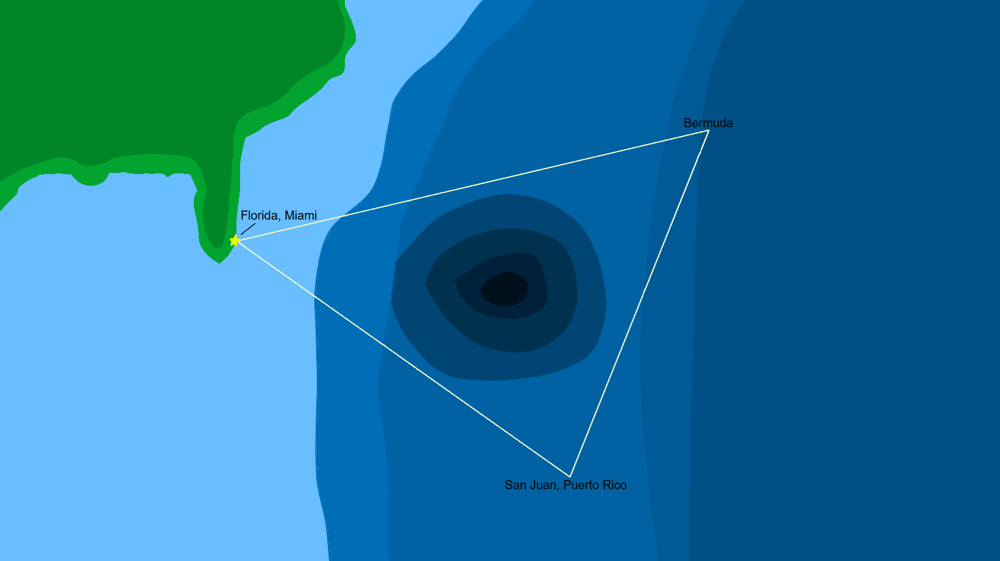

The Bermuda Triangle
Introduction
The Bermuda Triangle, or alternatively called The Devil Triangle is a triangular space in the Altantic Ocean that has an abnormally high amount of disappearences are recorded. The Bermuda Triangle stretches from Miami, Florida, to Bermuda, to San Juan, Puerto Rico...

The Bermuda Triangle is where about a thousand lives have been lost without a known reason. Some believe that the Bermuda Triangle has extraterrestrials capturing humans, other theories include the lost continent of Atlantis, or vortices that suck objects into other dimensions. However the most science-supported theories include combinations of human error with natural disasters like oceanic flatulence.
Incidents
Flight 19
Flight 19 is one of the most notorious disappearences relating to the Bermuda Triangle. Flight 19 a group of five U.S Navy TBM Avenger Torpedo bombers that eventually vanished on December 5, 1945. On this Flight, contained 14 men that were on a training mission from Fort Lauderdale, Florida led by Lieutenant Charles Caroll Taylor. Their mission was to fly to the east from the Florida coast, conduct bombing runs, then turn north to travel to Grand Bahama Island and embarked at 2:10 PM. During the first leg of the flight, nothing unusual happened to them, but at 3:45 PM, Flight 19 experienced navigational problems as they were lost and couldn't see land below them. Around 4:25 PM Taylor requested a radar screen that could pick up the group's location in real time, but no such technology was available. Around 4:45 Taylor yold the group to instead fly north to make sure they were not over the Gulf of Mexico. Around 6:04 PM, Taylor instructed Flight 19 to turn around and go east again since they didn't go enough east. At this point, weather conditions and sunlight were rapidly deteriorating, and on December 5, 1945 7:04 PM, Flight 19 completely vanished and all 14 men were considered casualties. An additional 13 people on PBM Mariner flying boats carrying rescue equipment went to Flight 19's last known position. But after 10 minutes into the rescue flight, one of the rescue planes disappeared who had transmitted a messgae back to Fort Launderdale's flight operations. Shortly after these disappearences, Coast Guard, Navy and naval aviation personnel searched more than 250,000 sqaure miles but no signs of crashed planes were found. The aftermath of Flight 19 were 27 deaths, 14 from the Flight 19 tragedy and the other 13 from from the PBM Mariner rescue tragedy.
USS Cyclops
The USS Cyclops was an important naval asset during World War 1 but was lost in the Bermuda Triangle during a voyage to Brazil from Barbados. The Cyclops had a crew of 306 people and was supplied with 11,000 tons of manganese aboard. When the USS Cyclops was lost on March 1918, no traces of it were found. Multiple theories surrounded the disappearence of The Cyclops. One of the theories is that it was eaten by some beast of the deep since no debris was left, another believed that the ship was captured by extraterrestrials, also supported by the idea that nothing was found. But more realistic theories either pointed to the captain, George W. Worley who month earlier before the incident some members claimed he was a drunk, undue to steer a ship, a possible series of mechanical failures, or violent waves that tipped the ship and the crew into the ocean.